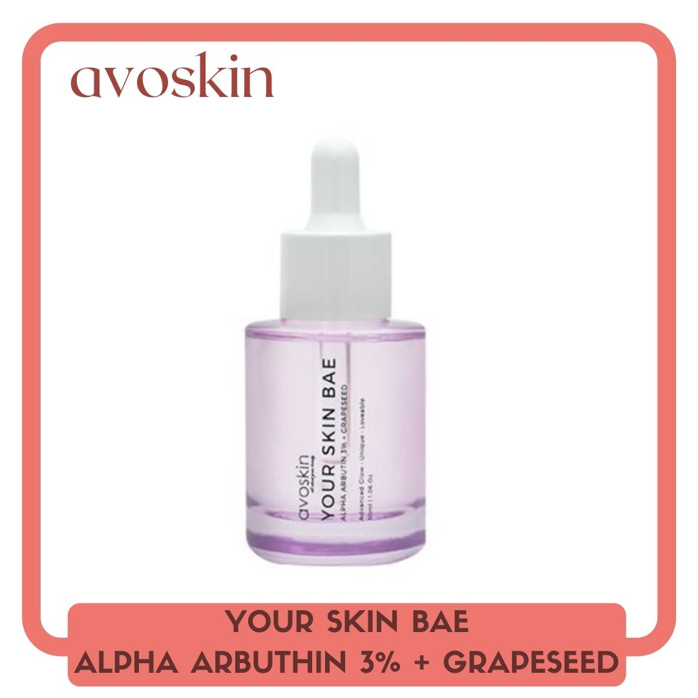

Avoskin Alpha Arbuthin

Merupakan Brightening & Antioxidant Serum. Serum yang memadukan active ingredients Alpha Arbutin 3% dan ekstrak natural dari Grapeseed untuk mencerahkan kulit dan memudarkan noda bekas jerawat. Alpha Arbutin merupakan brightening agent yang paling efektif dan aman untuk kulit. Sedangkan Grapseed mengandung antioksidan untuk menjaga sel kulit tetap sehat.
Cara penggunaan : Oleskan beberapa tetes ke wajah di pagi dan malam hari. Pijat kulit secara perlahan. Untuk hasil yang optimal selalu gunakan The Great Shield Sunscreen keesokan harinya.
Komposisi : Aqua, Alpha-Arbutin, Butylene Glycol, Glycerin, Hydroxyethyl Cellulose, Phenoxyethanol, Chlorphenesin, Vitis Vinifera (Grape) Seed Extract, Dissodium EDTA.